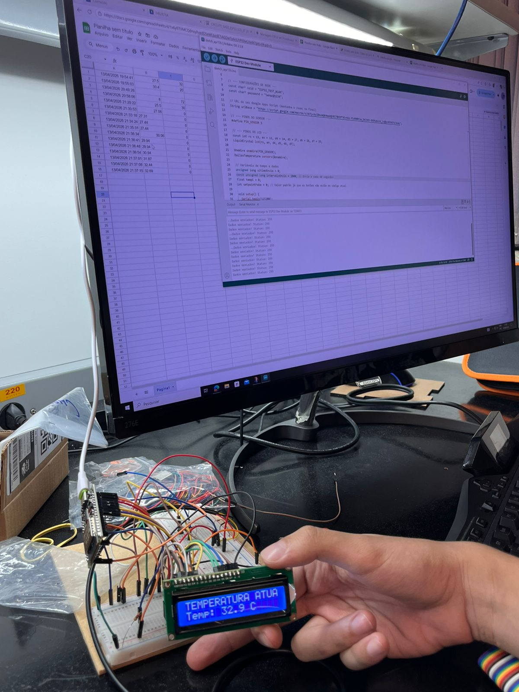
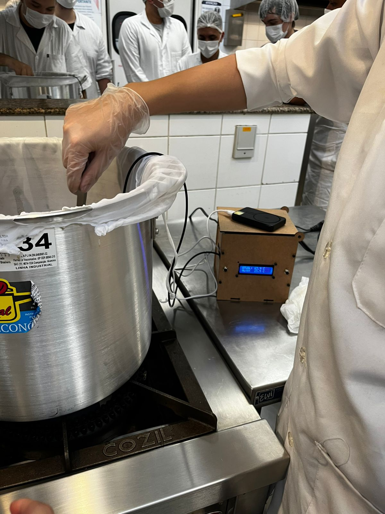

O núcleo deste projeto de engenharia consiste em um sistema de telemetria para o processo de fermentação. Utilizamos um microcontrolador ESP32 para realizar a leitura constante da temperatura da cerveja durante as etapas críticas de produção.
Os dados coletados pelo sensor são enviados via Wi-Fi para uma planilha automatizada, permitindo o registro histórico e a análise do comportamento térmico do lote em tempo real. Isso garante a repetibilidade do processo e o controle de qualidade rigoroso.
Abaixo, o código em C++ (Arduino IDE) que gerencia a captura e o tratamento dos dados térmicos:
#include#include #include #include #include #include // ADIÇÃO PARA ENVIO const char* ssid = "SSID_DA_SUA_REDE"; const char* password = "SENHA_DA_REDE"; // Substitua o ID abaixo pelo ID gerado na implantação do seu Google Apps Script String scriptID = "ID_DO_SCRIPT_AQUI"; #define PIN_SENSOR 16 #define PIN_RELE 12 #define I2C_SDA 26 #define I2C_SCL 27 LiquidCrystal_I2C lcd(0x27, 16, 2); OneWire oneWire(PIN_SENSOR); DallasTemperature sensors(&oneWire); float tempC = 0; void setup() { Serial.begin(115200); // INICIALIZAÇÃO WIFI WiFi.begin(ssid, password); Serial.print("Conectando WiFi"); while (WiFi.status() != WL_CONNECTED) { delay(500); Serial.print("."); } Serial.println("\nWiFi Conectado!"); // ---------------------------------- // 1. Garante o estado dele antes de tudo pinMode(PIN_RELE, OUTPUT); digitalWrite(PIN_RELE, HIGH); // Inicia desligado (Lógica Inversa) // 2. 3 segundos para a fonte de 3.1A estabilizar a placa de fenolite // Isso evita que o display tente iniciar enquanto a energia ainda está oscilando delay(3000); // 3. INICIALIZAÇÃO I2C Wire.begin(I2C_SDA, I2C_SCL); lcd.init(); lcd.backlight(); sensors.begin(); lcd.clear(); lcd.print("EcoEdge Ready!"); Serial.println("Sistema Iniciado..."); delay(1500); } void loop() { sensors.requestTemperatures(); tempC = sensors.getTempCByIndex(0); // LÓGICA DO RELÉ REFINADA --- // Se a temperatura subir (passar de 23.5), liga o relé para resfriar/atuar if (tempC >= 23.5 && tempC != DEVICE_DISCONNECTED_C) { digitalWrite(PIN_RELE, LOW); // ATIVA Serial.println("Relé: ATIVADO (Quente)"); } // Se a temperatura cair abaixo de 22.5, desliga (Histerese para não "estalar" toda hora) else if (tempC < 22.5 && tempC != DEVICE_DISCONNECTED_C) { digitalWrite(PIN_RELE, HIGH); // DESATIVA Serial.println("Relé: DESATIVADO (Frio)"); } // TRATAMENTO DE ERRO E DISPLAY if (tempC == DEVICE_DISCONNECTED_C) { Serial.println("Erro: Sensor desconectado!"); lcd.setCursor(0, 0); lcd.print("ERRO SENSOR! "); digitalWrite(PIN_RELE, HIGH); } else { // Se o display travar (barras brancas), o comando init() abaixo pode ajudar a recuperar // mas vamos focar em manter a escrita estável: lcd.setCursor(0, 0); lcd.print("TEMP. ATUAL: "); lcd.setCursor(0, 1); lcd.print("Temp: "); lcd.print(tempC, 1); lcd.print(" C "); Serial.print("Leitura: "); Serial.println(tempC); // ADIÇÃO: FUNÇÃO DE ENVIO PARA PLANILHA enviarParaPlanilha(tempC); // --------------------------------------------- } //tirar do comentario caso erro no display lcd // lcd.init(); delay(2000); } // ADIÇÃO: LÓGICA DE ENVIO HTTP void enviarParaPlanilha(float valor) { if (WiFi.status() == WL_CONNECTED) { HTTPClient http; String url = "https://script.google.com/macros/s/" + scriptID + "/exec?temp=" + String(valor); // Inicia a requisição http.begin(url.c_str()); http.setFollowRedirects(HTTPC_STRICT_FOLLOW_REDIRECTS); // Necessário para Google Scripts int httpResponseCode = http.GET(); if (httpResponseCode > 0) { Serial.print("Planilha atualizada. Código: "); Serial.println(httpResponseCode); } else { Serial.print("Erro no envio WiFi: "); Serial.println(httpResponseCode); } http.end(); } }
O monitoramento contínuo permitiu ajustes rápidos no sistema de arrefecimento durante a fermentação ativa, mantendo a temperatura dentro do setpoint ideal para a levedura selecionada.

Figura 1:Primeiro teste antes da soldagem da placa .
Figura 2: Medição da temperatura durante a produção .